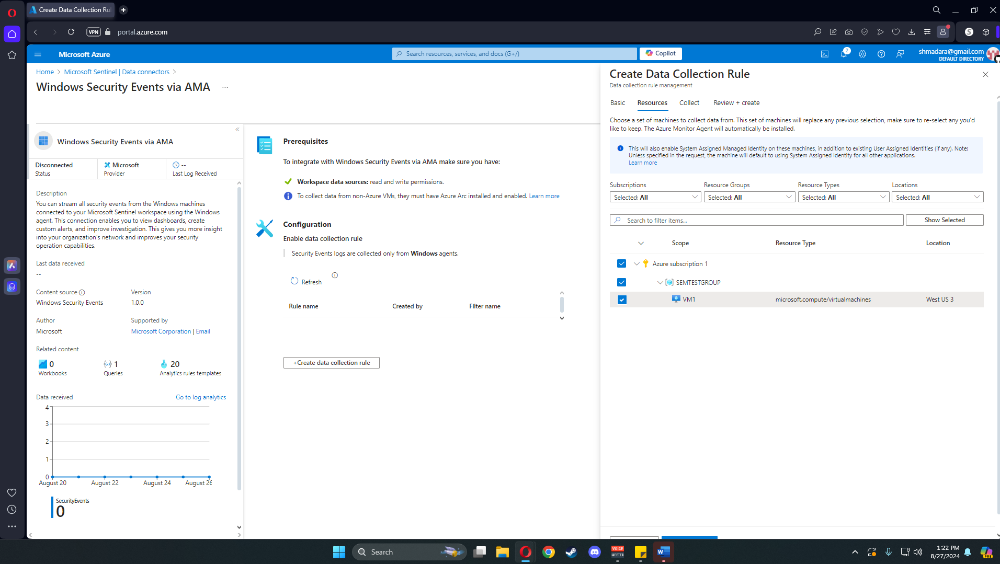
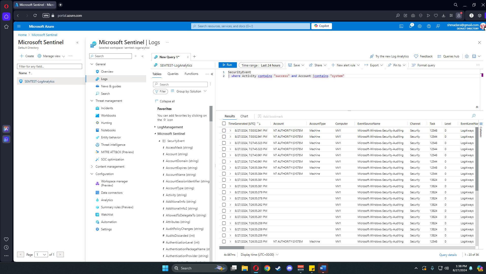
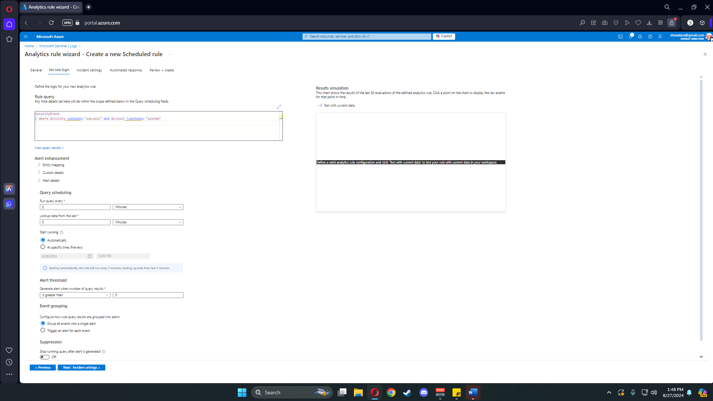
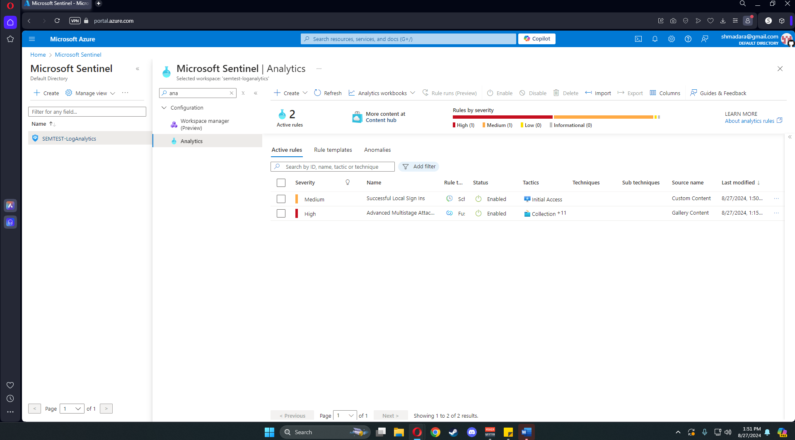

Projects
Building a SIEM with Microsoft Azure
Deployed a full Security Information and Event Management system using Microsoft Sentinel. Configured a Windows 10 VM, set up log ingestion via a data connector, wrote KQL detection rules, and triggered a live incident alert via RDP.
View full walkthrough
Step 1 — Create the Virtual Machine
Create a Windows 10 Pro VM and name the resource group. Naming a group here creates one automatically.

The critical setting is allowing all RDP ports. A default username and test password are used for credentials.

Click through to the networking page and confirm port 3389 is enabled.

Final review page before deploying the VM.

Step 2 — Set Up Microsoft Sentinel
Search for Microsoft Sentinel, create a workspace, select the resource group, and name the Log Analytics workspace.
Click Add to connect the workspace to Sentinel.

Navigate to the Sentinel page and configure a data connector to stream VM events.

Select Windows Security Events as the connector type.

Choose Windows Security Events via AMA — the legacy option is discontinued.

Create a collection rule to filter incoming data and select the VM and resource group.


Step 3 — Write Detection Rules
In the Log Analytics query editor, write a KQL query to surface only successful RDP connections.

Name the rule Successful Local Sign-Ins and configure alert settings.

The overview page shows the new rule alongside a default Azure rule.

Step 4 — Trigger a Live Incident
RDP into the VM from another device. The login triggers the detection rule and generates a Sentinel incident notification.

Creating and Configuring a Firewall
Hands-on walkthrough of firewall setup and rule configuration.
Password Standard Policy
A formal password standard document written as part of a security policy coursework project.